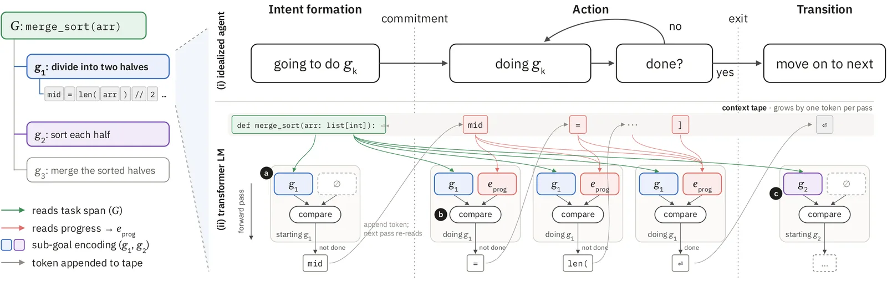
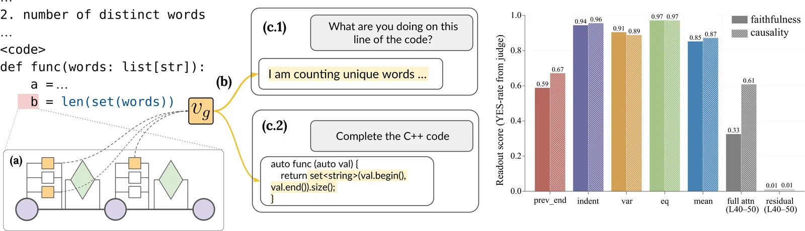
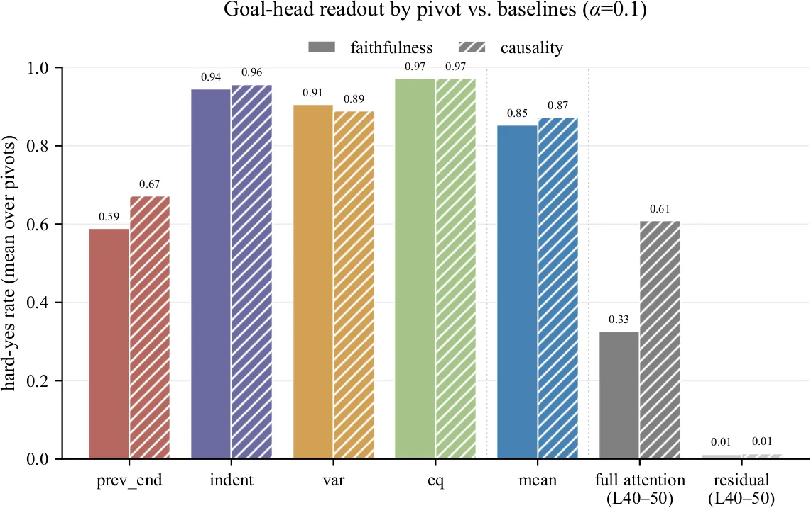
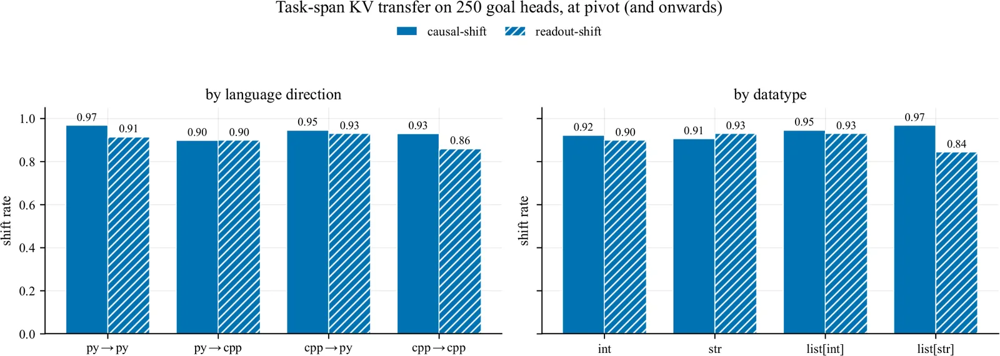

A ilusão da intenção em redes profundas
Quando observamos um modelo de linguagem grande (LLM) gerando um código complexo, como uma função de ordenação, é natural atribuir-lhe uma intenção: "ele quer dividir o array", "ele quer mesclar os resultados". Essa atribuição de estados mentais, chamada de postura intencional, é útil para prever comportamentos, mas levanta uma questão técnica crucial: existe algum mecanismo neural interno que corresponda a esse "estado de meta"? Ou o modelo está apenas completando padrões estatísticos sem qualquer representação explícita de planejamento?
O paper "Goal Encoding in LLMs", de pesquisadores de universidades como Northeastern, Oxford e Parallax, investiga exatamente essa lacuna. Eles não perguntam se o LLM se comporta como se tivesse objetivos, mas se esses objetivos são codificados de forma explícita e causal em seus pesos. A definição operacional de "meta" usada no estudo exige três propriedades: pré-compromisso (a meta aparece antes da ação), plasticidade (a mesma meta pode ser realizada de formas diferentes dependendo do ambiente) e persistência (a meta guia a execução ao longo do tempo).
O desafio central é que os Transformers, a arquitetura base dos LLMs atuais, não possuem memória recorrente. Cada token é processado em uma passagem única, e a informação deve fluir através das camadas da rede. Para tarefas longas, isso cria um gargalo: o modelo não tem uma "memória de trabalho" explícita para segurar uma meta enquanto gera centenas de tokens. Este paper propõe que os LLMs resolvem esse problema de uma maneira contraintuitiva, sem manter um estado persistente, mas recalculando-o repetidamente.

O experimento de codificação multi-etapa
Para testar essas hipóteses, os autores criaram um ambiente controlado onde LLMs devem implementar algoritmos de programação passo a passo, como o Merge Sort. Esse cenário é ideal porque decomponível em sub-objetivos claros: primeiro dividir o array, depois ordenar cada metade e, finalmente, mesclar os resultados. Cada sub-objetivo representa um ponto onde o modelo poderia, teoricamente, formar e manter uma intenção.
A abordagem metodológica foca em localizar onde, dentro da rede neural, a informação sobre o "próximo sub-objetivo" reside. Os autores não assumem que a informação está espalhada uniformemente. Em vez disso, eles investigam se um conjunto específico de cabeças de atenção (attention heads) — unidades que calculam a relevância relativa entre tokens — carrega essa informação. Se existirem metas neurais, elas deveriam estar acessíveis e decodificáveis a partir desses componentes específicos.
O experimento envolve três verificações principais. Primeiro, verificar se a codificação do sub-objetivo surge antes da ação começar (pré-compromisso). Segundo, testar se essa codificação é plástica: se injetarmos a mesma representação neural em um contexto diferente, o modelo realiza a mesma operação lógica, mas usando tokens adequados ao novo ambiente (por exemplo, mudando de Python para C++). Terceiro, verificar a persistência: a representação guia o modelo durante toda a execução do sub-objetivo, mesmo que o modelo não tenha memória de longo prazo explícita.
Localizando e decodificando a meta
Os autores identificaram que a codificação do sub-objetivo está concentrada em um conjunto esparsa de cabeças de atenção. Ao extrair as saídas dessas cabeças em pontos específicos do contexto (chamados de "pivot tokens"), eles conseguem agregar essas informações em um único vetor vetorial. Este vetor não é apenas um resumo vago; ele carrega informação estruturada sobre o que o modelo está tentando fazer.
Para provar que esse vetor representa realmente um objetivo, os autores realizaram um processo de decodificação. Eles usaram prompts específicos para perguntar ao modelo o que ele estava fazendo naquele momento, usando apenas a informação contida no vetor extraído das cabeças de atenção. O resultado foi impressionante: o modelo verbalizou corretamente intenções como "estou verificando se uma palavra é um palíndromo" ou "estou dividindo o array na metade". Isso demonstra que a informação sobre a meta está presente e acessível neuralmente, independentemente de o modelo ter explicitamente declarado essa intenção no prompt original.
A Figura 2 do paper ilustra esse processo de extração e decodificação. Mostra como, a partir de um token pivô, as saídas das cabeças selecionadas são agregadas e usadas para inferir a intenção do modelo. A precisão dessa inferência serve como métrica de fidelidade: quanto mais preciso for o texto gerado a partir do vetor neural, mais forte é a evidência de que aquele vetor codifica a meta.

Intervenções causais e plasticidade
A correlação não é causalidade. Para provar que essas cabeças de atenção são realmente responsáveis pela direção da ação, os autores realizaram intervenções causais. Eles injetaram o vetor de meta extraído de um contexto (fonte) em outro contexto (alvo) que não continha informações sobre essa meta. Se o modelo alvo começar a agir de acordo com a meta injetada, isso prova que a codificação neural é o gatilho causal da ação.
Dois tipos de intervenção foram testados: aditiva e substituição. Na intervenção aditiva, o vetor de meta é somado às ativações de várias camadas do modelo alvo. Na substituição, as contribuições das cabeças de atenção no modelo alvo são substituídas pelas contribuições do modelo fonte. Os resultados mostraram que essas intervenções são eficazes: o modelo direcionado segue a meta injetada, mesmo que isso signifique ignorar o contexto original ou mudar de linguagem de programação.
A plasticidade foi demonstrada ao transplantar a codificação de um sub-objetivo em Python para um ambiente de C++. O modelo realizou a mesma operação lógica (ex: divisão de array), mas gerou tokens sintaticamente corretos para C++. Isso confirma que a representação neural é abstrata o suficiente para ser independente da sintaxe específica, suportando a definição de meta como um estado funcional flexível.
A hipótese da Busca Não-Recurrente (NRGS)
A descoberta mais intrigante do paper é como os LLMs mantêm a persistência da meta sem memória recorrente. Um Transformer puro perde informação sobre tokens antigos à medida que avança, pois cada camada tem uma capacidade limitada de transportar informação. Como o modelo sabe que ainda precisa "ordenar a metade direita" depois de gerar 50 linhas de código?
Os autores propõem a hipótese de Busca Não-Recurrente (Non-Recurrent Goal-Seeking, NRGS). Segundo essa teoria, o modelo não mantém a meta em um estado latente. Em vez disso, a cada passo de geração, o modelo releia a especificação da tarefa (o prompt original) e o progresso visível no contexto crescente (o código já gerado). Ele compara esses dois inputs para determinar o que resta a fazer.
Isso significa que a "persistência" da meta é uma ilusão criada por recomputação constante. O modelo recalcula, a cada token, qual é o sub-objetivo atual, baseando-se na leitura contínua do contexto. Essa abordagem é computacionalmente custosa, mas funcional dentro da arquitetura Transformer. Ela explica por que o modelo pode lidar com tarefas longas sem um mecanismo de memória explícito: ele externaliza a memória para o contexto e o prompt, reprocessando-os repetidamente.

Resultados e limitações do estudo
Os resultados quantitativos suportam fortemente a hipótese NRGS. As intervenções causais mostraram que, ao controlar o que as cabeças de objetivo "veem" no contexto, os autores puderam redirecionar as ações do modelo. Isso confirma que a leitura do contexto pelas cabeças de meta é o mecanismo central de tomada de decisão.
Além disso, a Figura 12 mostra que a extração de informação via cabeças de objetivo é superior a métodos padrão, como o uso dos estados residuais completos ou de outras cabeças de atenção não especializadas. Isso sugere que a codificação de metas é um fenômeno localizado e específico, não um efeito colateral geral do processamento de linguagem.
No entanto, o estudo tem limitações claras. Ele foi conduzido em um ambiente controlado de geração de código. Embora a plasticidade tenha sido testada entre linguagens, não está claro se o mesmo mecanismo se aplica a tarefas de raciocínio lógico ou conversacional livre. Além disso, a eficiência computacional da estratégia NRGS é questionável: recalcar o progresso a cada passo exige atenção sobre todo o contexto histórico, o que pode se tornar inviável em tarefas extremamente longas.
Outra ressalva importante é a generalização. O paper sugere que os LLMs reutilizam o mesmo mecanismo para perseguição de metas em diversas situações, mas a evidência direta vem principalmente de tarefas algorítmicas. A extensão para comportamentos mais complexos, como planejamento estratégico em ambientes simulados, permanece como uma área aberta para pesquisa futura.

Conclusão: O que aprendemos sobre a mente da máquina
O paper "Goal Encoding in LLMs" oferece uma contribuição significativa para a interpretabilidade de modelos de linguagem. Ele desmistifica a noção de que LLMs possuem uma "memória de trabalho" humana ou um estado de intenção persistente. Em vez disso, revela um mecanismo elegante e robusto: a recomputação contínua baseada em leitura atenta do contexto.
A identificação de um conjunto esparsa de cabeças de atenção responsáveis por codificar sub-objetivos abre novas possibilidades para o controle e a correção de LLMs. Se podemos identificar e manipular causalmente essas metas, podemos corrigir desvios de comportamento de forma mais precisa, intervindo apenas nos componentes neurais relevantes, em vez de reajustar o modelo inteiro.
Para desenvolvedores e cientistas de dados, a lição principal é que a aparente inteligência e planejamento dos LLMs emergem de processos locais e repetitivos, não de uma arquitetura de memória global. Compreender esses mecanismos internos é essencial para construir sistemas mais confiáveis, previsíveis e alinhados com as intenções humanas, especialmente em tarefas que exigem raciocínio multi-etapa complexo.
O que fica
- LLMs localizam sub-objetivos em um conjunto esparsa de cabeças de atenção, não na memória residual global.
- O modelo usa uma estratégia de 'busca não-recorrente': releitura constante da meta e do contexto para decidir o próximo token.
- Intervenções causais provam que essas cabeças dirigem a ação; transplantar a codificação altera o comportamento do modelo.
- A persistência do objetivo é ilusória: o modelo reconstrói a intenção repetidamente, contornando a limitação de profundidade do transformer.
Paper original: Goal Encoding in LLMs
Comentários
Nenhum comentário ainda. Seja o primeiro.